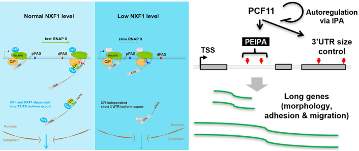
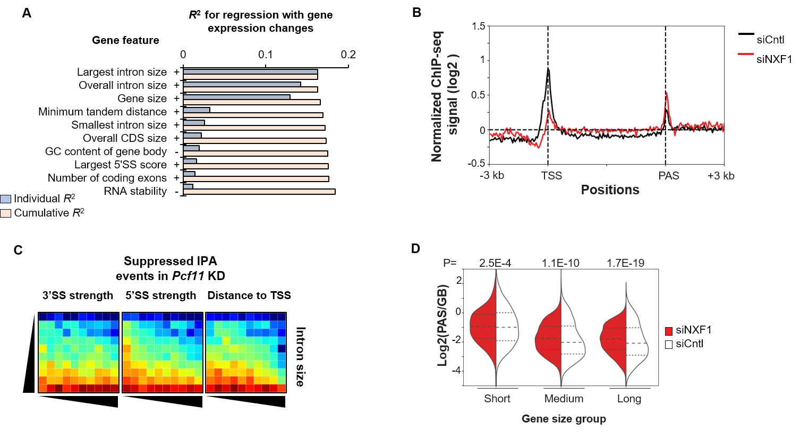

Project Overview
 APA has been increasingly recognized as an important layer mRNA processing regulator which plays an important role in disease related process, such as tumorigenesis and neurological disorder. In this ongoing research, we have studied export factor NXF1 and CPA factor PCF11, revealing gene size-based and APA-based regulatory mechanisms. We also collaborate with a UCSD team on APA regulation in acute myeloid leukemia patients
Representative publication
- Ruijia Wang, Dinghai Zheng, Lu Wei, Qingbao Ding, Bin Tian: Regulation of intronic polyadenylation by PCF11 impacts mRNA expression of long genes. Cell Reports, 26.10 (2019):2766-2778.e2766. Paper link
- Suli Chen*, Ruijia Wang*, Dinghai Zheng*, Heng Zhang*, Xingya Chang, Ke Wang, Wencheng Li, Jing Fan, Bin Tian, Hong Cheng: The mRNA export receptor NXF1 coordinates transcriptional dynamics, alternative polyadenylation and mRNA export. Molecular Cell, 1.74 (2019):118-131. Paper link
- Dinghai Zheng*, Ruijia Wang*, Qingbao Ding, Tianying Wang, Bingning Xie, Lu Wei, Zhaohua Zhong, Bin Tian: Cellular stress alters 3’ UTR landscape through alternative polyadenylation and isoform-specific degradation. Nature communications 9.1 (2018): 2268. Paper link
Gallery

Figure. Bioinformatic modeling on the regulation of alternative cleavage and polyadenylation (APA).
(A) Top features on the basis of regression analysis of gene features versus gene expression changes in siPcf11 versus siCtrl samples (total RNA). Features are sorted according to individual R2 value. Cumulative R2 value is based on a given feature together with all other features with a better individual R2 value. + and ? denote positive and negative correlations, respectively.
(B) Metagene analysis of normalized Pol II signals
(log2 [IP/input]) on genes based on ChIP-seq data.
ChIP-seq signal at each position of a gene is
divided by the sum of signal of the gene to
normalize each gene contribution to the plot.
(C) IPA distribution maps of suppressed IPA events in Pcf11 KD cells. Color represents ratio (log2) of number of observed (obs) events to number of expected (exp) events.
(D) PAS to gene body ratio of Pol II signals in different gene size groups.
Author: Ruijia Wang